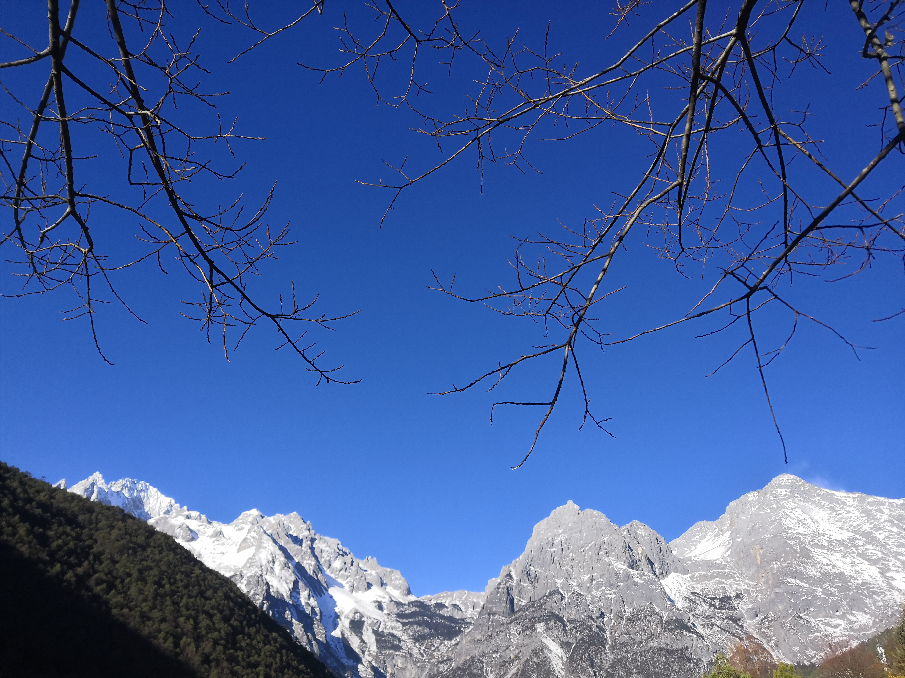
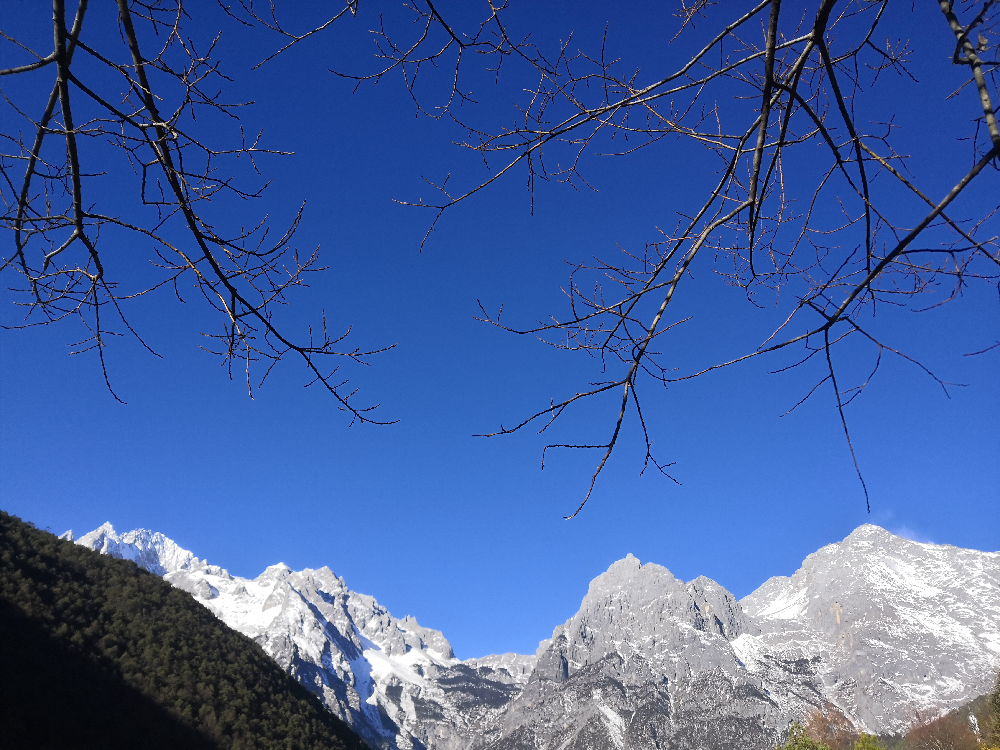

总是要走在路上
才知道世界的广阔
才体会自然的美妙
爱上这个多彩无限的世界
Travel to 青海
19年国庆节，自己一个人从武汉坐上了开往拉萨的火车，
在青海西宁开启我的骑行之旅
在民宿遇到了有意思的人，跟我完全不一样的另一个世界
骑行在青海，是一次妙不可言的心灵洗涤，让人念念不忘
我看到了璀璨星河，潮起潮落，
一次唯美的日出，天空之境......
骑行在路上一日，从烈日炎炎到雨雪飞溅，
太多太杂了，有些感受唯有亲自体验
在青海西宁开启我的骑行之旅
在民宿遇到了有意思的人，跟我完全不一样的另一个世界
骑行在青海，是一次妙不可言的心灵洗涤，让人念念不忘
我看到了璀璨星河，潮起潮落，
一次唯美的日出，天空之境......
骑行在路上一日，从烈日炎炎到雨雪飞溅，
太多太杂了，有些感受唯有亲自体验
Travel to 长沙
19年清明节，赶着ddl从武汉左4个小时到长沙
在朋友的宿舍住着，在街头小巷流窜
印象最深的还是一望边际的湘江
以及到如今念念不忘的美食
在朋友的宿舍住着，在街头小巷流窜
印象最深的还是一望边际的湘江
以及到如今念念不忘的美食

Travel to 云南
20年刚结束考试，
便计划着和高中同学一场武汉-云南的旅行
短短的四天，一晃就过去了
在汉口的巷子里又一次发现新的乐趣
登上玉龙雪山的时候只觉得，
这个世界，值得一切情感的寄托
 


......
走在路上只觉得一切都那么奇妙，
看山看水，也看自己的内心
期待续写更多的故事
一直走,别停下 ❤